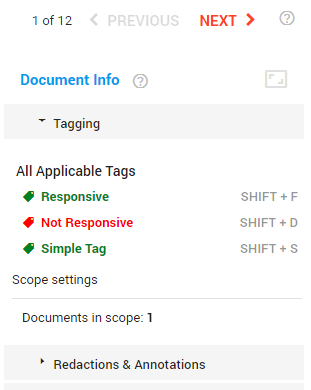

Tag the documents with the most relevant data.
Tag to filter, sort and retrieve a document.
When you tag a document, you add a piece of information that defines the contents of the document.
Depending on the permissions you have received, you may not be able to use all tags.
For more information on how to create tags—see Tags.
If you want to apply tags to a group of documents at once—see Bulk Tagging in Document List.
When there is a tagging error or conflict, you will be notified and you will be able to open the document that caused it.

Click applicable tags or use the short cuts listed behind the tags.
Use the short cut T to tag a new document as the previous document.
Scope Settings
Use the Scope Settings to configure the involved files when adding or removing a tag. For example, tag all documents in a family/conversation or only this document.
If and how documents/emails are related to each other, can be viewed in the Document Family/Conversation panel (on the left side of the screen). Related documents with a parent-child relationship are typically emails (parent) and their attachments (child).
Documents in Scope
Number of involved documents, based on settings of Email Conversation, Document Family and/or Duplicates.